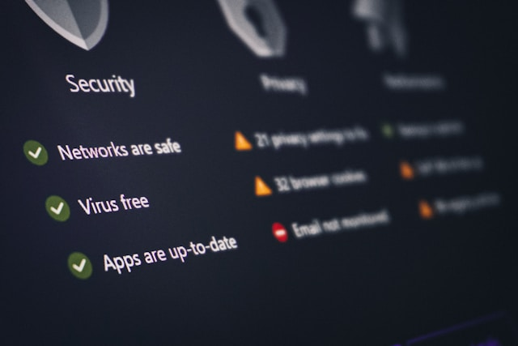

Vous dirigez une PME ou vous gérez son informatique, et NIS2 commence peut-être à apparaître dans vos échanges : un client qui pose une question, un prestataire qui vous envoie une ressource, un article qui parle d'obligations cyber alors que la loi française n'est pas encore totalement finalisée. En France, le retard est même assez avancé pour que la Commission européenne saisisse la Cour de justice de l'Union européenne le 8 juillet 2026, notamment contre la France, faute de notification complète des mesures de transposition.
Au milieu de tout ça, une question peut revenir vite :
Est-ce que vous devez vraiment vous en occuper maintenant ?
Difficile de répondre en regardant seulement votre activité de loin. NIS2 ne concerne pas une entreprise simplement parce qu'elle utilise des outils numériques ; si c'était le cas, presque tout le monde serait concerné. Ce qui compte, c'est plutôt votre activité, votre taille et, parfois, la place que vous occupez chez vos clients.
Une PME industrielle, un éditeur logiciel ou un prestataire informatique peuvent donc avoir intérêt à vérifier leur situation, même si le sujet paraît d'abord réservé à de plus grandes structures ou à des secteurs très encadrés.
NIS2 2026 : pourquoi certaines PME doivent vérifier leur situation
NIS2 vise à renforcer la cybersécurité dans l'Union européenne. Elle reprend une première directive de 2016, mais avec un champ plus large : davantage d'organisations peuvent être concernées, comme le précise le texte officiel de la directive.
C'est là que beaucoup de PME peuvent se tromper. Vous pouvez très bien diriger une entreprise et vous dire : « Nous ne sommes pas un hôpital, pas une banque, pas un fournisseur d'énergie. Pourquoi NIS2 nous concernerait ? »
Vous avez évidemment raison de vous poser la question. Mais le périmètre de NIS2 ne se limite pas aux organisations auxquelles on pense spontanément. Il ne faut pas seulement regarder si vous êtes un hôpital, une banque, un fournisseur d'énergie ou une grande infrastructure.
Une PME peut aussi devoir vérifier sa situation pour des raisons plus ordinaires : son activité, sa taille, ou le rôle qu'elle joue auprès de certains clients.

Comment savoir si votre entreprise est concernée ?
Le plus simple est de commencer par votre activité. Que fait vraiment votre entreprise ? À qui sert votre service ? Et que se passerait-il chez vos clients si vous ne pouviez plus le fournir pendant quelque temps ?
Ces questions sont plus utiles qu'une réponse trop rapide du type : « Nous faisons seulement du logiciel » ou « nous sommes seulement prestataire informatique ». Un logiciel peut être utilisé dans un contexte sensible. Un prestataire peut avoir des accès importants chez ses clients. C'est ce rôle concret qui doit être regardé.
Votre secteur d'activité fait-il partie du périmètre NIS2 ?
Le secteur reste donc le premier repère. NIS2 vise notamment la santé, l'énergie, les transports, l'eau, la banque, les services numériques, l'industrie, l'administration et certains services informatiques. Vous pouvez retrouver la liste complète dans la présentation officielle de la directive NIS2.
Votre entreprise atteint-elle les seuils de taille prévus ?
Il faut ensuite regarder la taille de l'entreprise. L'espace NIS2 de Mes Services Cyber indique qu'une entité importante emploie au moins 50 personnes ou dépasse 10 millions d'euros de chiffre d'affaires et de bilan annuel.
Attention toutefois : ce calcul ne se limite pas forcément à l'activité concernée par NIS2. Il faut regarder l'entreprise dans son ensemble. Et si votre PME appartient à un groupe, les effectifs et le chiffre d'affaires du groupe peuvent aussi compter.
Vous le voyez bien, entre l'activité, la taille de l'entreprise et le cas particulier des groupes, il n'est pas toujours simple de savoir où vous vous situez. Pour éviter de tout vérifier seul, vous pouvez utiliser l'outil d'auto-évaluation NIS2, qui permet déjà d'y voir plus clair en quelques minutes.
Vos clients peuvent-ils vous demander des garanties liées à NIS2 ?
Même si votre entreprise n'entre pas directement dans le périmètre, vos clients peuvent vous ramener au sujet. C'est souvent le cas lorsqu'ils travaillent eux-mêmes dans un secteur sensible ou qu'ils doivent renforcer leurs exigences de sécurité.
Imaginez un renouvellement de contrat. Jusqu'ici, votre client vous demandait surtout un prix, un délai ou encore un niveau de service. Désormais, il peut aussi vouloir savoir où vous en êtes en matière de cybersécurité : si vous protégez bien vos accès, où sont vos sauvegardes, qui intervient en cas d'incident ou ce que prévoit votre contrat en matière de sécurité.
Une PME capable de répondre clairement à ces questions rassure son client. À l'inverse, découvrir ces exigences au dernier moment, dans un appel d'offres ou juste avant une signature, peut rendre la discussion beaucoup plus compliquée.
Entité essentielle ou entité importante : ce que cela change pour votre entreprise
Si votre entreprise entre dans le périmètre NIS2, elle pourra être classée dans l'une de ces deux catégories : entité essentielle ou entité importante.
Vous n'avez pas besoin de retenir tout le détail juridique dès maintenant. L'idée à comprendre est plus simple : certaines organisations seront suivies de plus près que d'autres, parce qu'une cyberattaque chez elles pourrait avoir des conséquences plus lourdes.
Dans les deux cas, NIS2 ne se limite pas à installer quelques outils de cybersécurité. Votre entreprise devra surtout être capable de montrer ce qu'elle protège, qui suit le sujet, quelles mesures ont été lancées et comment elle réagit si un incident survient.
Entité essentielle : les organisations que l'on surveille de plus près
Imaginez une cyberattaque qui bloque une partie d'un hôpital. Le problème ne reste pas longtemps « un sujet informatique ». Très vite, des usagers peuvent être touchés, des équipes ralenties, des services ne plus fonctionner correctement.
C'est ce type d'organisation que NIS2 classe parmi les entités essentielles. Toutes ne se ressemblent pas, mais elles ont un point commun : l'arrêt de leur activité ne les touche pas uniquement. Elles peuvent impacter des usagers, des partenaires ou d'autres services qui dépendent d'elles.
Pour ces entités, il ne suffit donc pas de dire que « l'informatique s'en occupe ». Il faut pouvoir montrer que les risques sont suivis, que des mesures ont été décidées, que les responsabilités sont claires et que l'entreprise sait quoi faire si un incident survient.
Entité importante : ne lisez pas ce statut comme une simple formalité
Si votre entreprise est classée comme entité importante, elle entre bien dans le cadre NIS2. Ce n'est pas la catégorie la plus surveillée, mais cela ne veut pas dire que le sujet peut attendre.
Vous devrez notamment vous enregistrer auprès de l'ANSSI, signaler certains incidents et mettre en place des mesures de cybersécurité adaptées. L'espace NIS2 de MesServicesCyber détaille ces obligations pour les entités concernées.
Pour une PME, le plus utile est de retenir ceci : même avec un suivi moins poussé qu'une entité essentielle, il faudra pouvoir montrer où vous en êtes. Quels risques avez-vous identifiés ? Quelles actions avez-vous lancées ? Qui suit le sujet ? Ce sont des questions simples, mais il vaut mieux ne pas les découvrir le jour où un client, l'ANSSI ou un assureur vous les pose.
Obligations NIS2 : ce que votre PME devra mettre en place
Quand NIS2 arrive sur la table, on pense souvent aux outils : pare-feu, antivirus, sauvegardes, supervision, audits. Ils auront leur place, bien sûr. Mais si vous commencez par là, vous risquez de passer à côté du plus important.
Avant de choisir des solutions, il faut déjà savoir ce qui doit absolument tenir dans votre entreprise. Votre messagerie ? Votre logiciel de gestion ? Vos données clients ? Vos sauvegardes ? Vos accès administrateur ?
C'est cette réflexion qui permet ensuite de mettre les bonnes mesures au bon endroit, au lieu d'empiler des outils sans savoir précisément quel risque vous cherchez à réduire.
Ne pas tout laisser au prestataire informatique
Dans une PME, on a vite tendance à renvoyer la cybersécurité vers le prestataire informatique. Quand ça bloque, on l'appelle. Pour les problèmes du quotidien, cette organisation fonctionne d'ailleurs souvent très bien.
Avec NIS2, cela ne suffit plus toujours. Si votre messagerie ou votre logiciel métier tombe, le prestataire traitera la partie technique. Mais pendant ce temps, l'entreprise doit continuer à fonctionner. Il faut savoir qui prévenir, quoi traiter en priorité et quelles informations conserver si l'incident doit être déclaré.
Cette partie-là, le prestataire ne peut pas la gérer seul. C'est d'ailleurs la logique du Référentiel Cyber France publié par l'ANSSI : les outils ne font pas tout. La sécurité dépend aussi de la manière dont l'entreprise s'organise pour anticiper et gérer les risques.
Repérer ce qui bloque vraiment le travail
Ne commencez pas par faire la liste complète de vos outils et logiciels. Dans une PME, cette liste devient vite longue, et elle ne dit pas forcément à quoi sert chaque outil dans la journée de travail.
Regardez plutôt un exemple concret : une entreprise qui prépare des commandes chaque matin. Si l'outil qui sort les bons ne fonctionne plus, le problème n'est pas de savoir s'il est « important » sur le papier. Le problème est beaucoup plus simple : est-ce que l'équipe peut continuer à travailler sans lui ?
Si quelqu'un sait faire autrement pendant quelques heures, le risque reste maîtrisable. Si les informations ne sont disponibles nulle part ailleurs, l'arrêt devient alors beaucoup plus compliqué.
Voici les points à retenir :
- combien de temps l'entreprise peut tenir sans lui ;
- s'il existe une solution de secours et qui sait la mettre en œuvre ;
- si la remise en route a déjà été testée.
Savoir quoi faire dans les premières heures d'un incident
Le jour où un outil important ne répond plus, il faut souvent agir avant même d'avoir compris toute la situation. C'est un peu stressant, mais c'est exactement pour ça que la préparation compte.
Qui prévient le prestataire ? Faut-il couper un accès par prudence ? Peut-on utiliser les sauvegardes ? Si l'activité d'un client est touchée, qui lui parle et à quel moment ?
Si rien n'a été prévu, ces décisions se prennent dans l'urgence et la panique. On peut perdre du temps à chercher le bon interlocuteur, oublier de noter certaines informations ou laisser chacun avancer avec sa propre version du problème. Une procédure courte, connue des bonnes personnes, aide déjà à éviter ça.
Avec NIS2, certains incidents devront aussi être signalés à l'ANSSI, et dans des délais courts. La directive prévoit un signalement en trois temps (article 23) : une alerte précoce sous 24 heures, une notification plus complète sous 72 heures, puis un rapport final sous un mois. Ces délais courent dès que vous avez connaissance de l'incident, week-ends compris.
Ce qu'il faut retenir
NIS2 peut encore sembler loin, surtout tant que la loi française n'est pas finalisée. Mais si votre PME travaille dans un secteur sensible, atteint certains seuils ou intervient auprès de clients concernés, mieux vaut vérifier votre situation maintenant.
Commencez par l'auto-évaluation NIS2 de l'ANSSI : en quelques minutes, vous saurez déjà si votre entreprise peut être concernée.
Concentrez-vous ensuite sur quelques points :
- votre secteur d'activité ;
- votre taille ;
- les outils qui bloqueraient vraiment le travail ;
- les accès, les sauvegardes et la gestion d'un incident.
Même si le cadre français évolue encore, ce premier tri ne sera pas perdu. Il vous aidera à savoir si NIS2 vous concerne vraiment, et à répondre plus clairement si un client, un assureur ou l'ANSSI vous demande où vous en êtes.
Questions fréquentes
NIS2 s'applique-t-elle à ma PME ?
Cela dépend de deux critères : votre secteur et votre taille. NIS2 vise des secteurs comme la santé, l'énergie, les transports, l'eau, la banque, les services numériques ou certains services informatiques. Si vous travaillez dans l'un d'eux et atteignez les seuils de taille, votre PME peut être concernée directement. Elle peut aussi l'être indirectement, quand un client soumis à NIS2 vous demande des garanties de sécurité.
Quels sont les seuils de taille de NIS2 ?
Une entité importante emploie au moins 50 personnes, ou dépasse 10 millions d'euros de chiffre d'affaires et de bilan annuel, d'après l'espace NIS2 de MesServicesCyber. En dessous, les micro et petites entreprises généralement hors périmètre, sauf exceptions liées à certaines activités. Le calcul se fait sur l'ensemble de l'entreprise, pas seulement sur l'activité concernée par la directive.
NIS2 est-elle déjà obligatoire en France en 2026 ?
Pas encore complètement. À l'été 2026, la transposition française n'est pas finalisée, au point que la Commission européenne a saisi la Cour de justice de l'Union européenne le 8 juillet 2026 pour ce retard. Vous pouvez toutefois vous appuyer dès maintenant sur le Référentiel Cyber France (ReCyF), publié par l'ANSSI le 17 mars 2026, qui liste les mesures recommandées pour atteindre les objectifs de la directive.
Quels sont les délais pour déclarer un incident ?
La directive prévoit un signalement en trois temps (article 23) : une alerte précoce sous 24 heures, une notification plus complète sous 72 heures, puis un rapport final sous un mois. Ces délais démarrent dès que vous avez connaissance de l'incident, week-ends et jours fériés compris.
Un contenu à valoriser ?
Me contacter